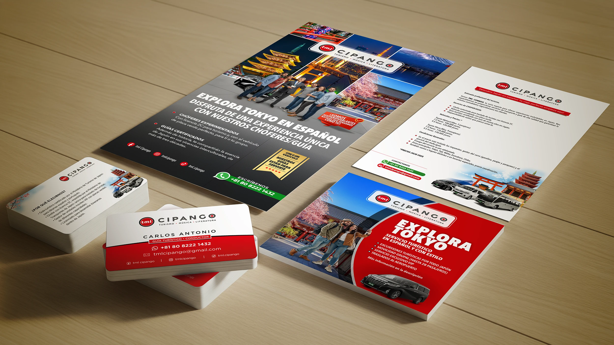
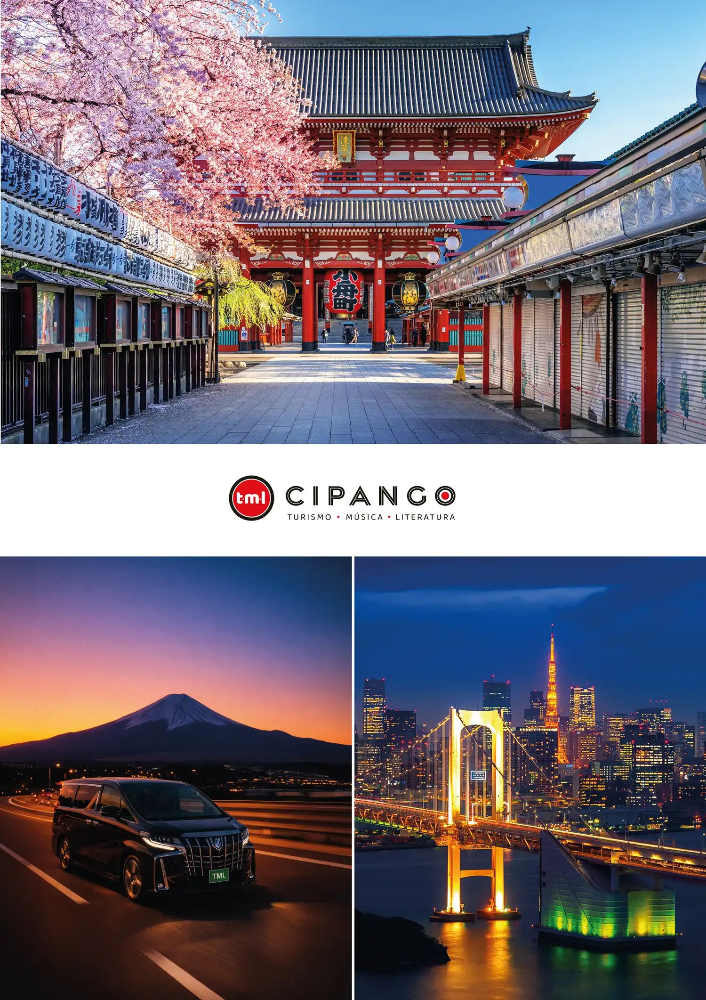
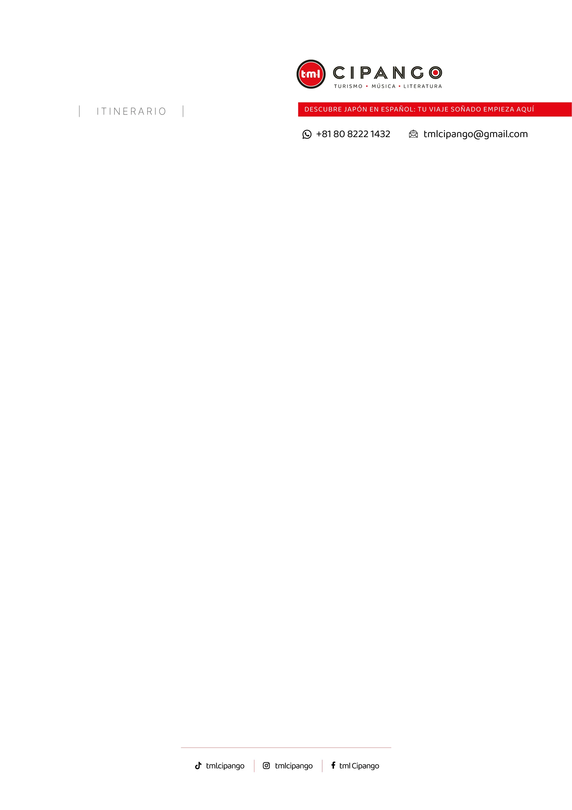

TML
Cipango.
Identidad + Contenido · 2024 · Tokio–Lima · 東京・リマ
Un año construyendo el sistema visual completo para una marca de turismo premium en Japón hecha por y para hispanohablantes. Identidad bicultural, arquitectura de marca y dirección de contenido multimedia — la voz de un peruano que lleva tres décadas viviendo en Japón y ahora guía a viajeros hispanos dentro del país.

Una marca que no traduce Japón.
Lo cuenta.
El turismo hispanohablante en Japón está dominado por agencias locales que ofrecen tours "en español" guiados por japoneses con dominio aproximado del idioma. Carlos es peruano, lleva más de tres décadas en Japón y guía viajeros hispanos como un par — no como traductor. El reto era construir una identidad que comunicara esa diferencia sin caer en los clichés visuales del Japón postal, y que funcionara igual de bien en redes sociales y en piezas impresas.
Cuatro fases.
Un año de trabajo.
Sistema visual completo.



Pedro entendió nuestra realidad como emprendedores acá en Tokio. No tuvimos que explicarle nada — sabía exactamente cómo debíamos vernos para el público latino y para el mercado local al mismo tiempo.
Hablemos.
30 minutos, sin compromiso. Te digo si puedo ayudarte o te recomiendo a alguien que sí.
Mi proyecto se parece al de TML.
Cuéntanos los detalles y lo aterrizamos.
De acuerdo, te llamo en 30 minutos